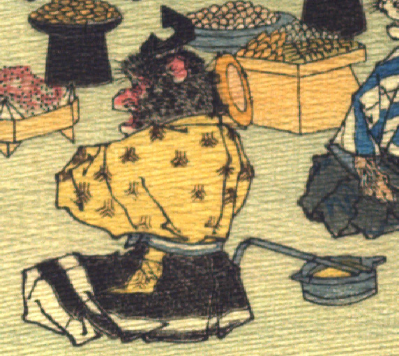

猿。烏帽子をかぶり、黄色の着物に黒と白の縞模様の袴を着けている。座って小鼓を打っている。画面右に、銚子が置かれている。
著作者：J.E.de Campos／出典：親書誌：U426_nichibunken_0115：Momotaro／日付：2006／資源識別子：U426_nichibunken_0115_0006_0002
Copyright (c)2010- International Research Center for Japanese Studies, Kyoto, Japan. All rights reserved.